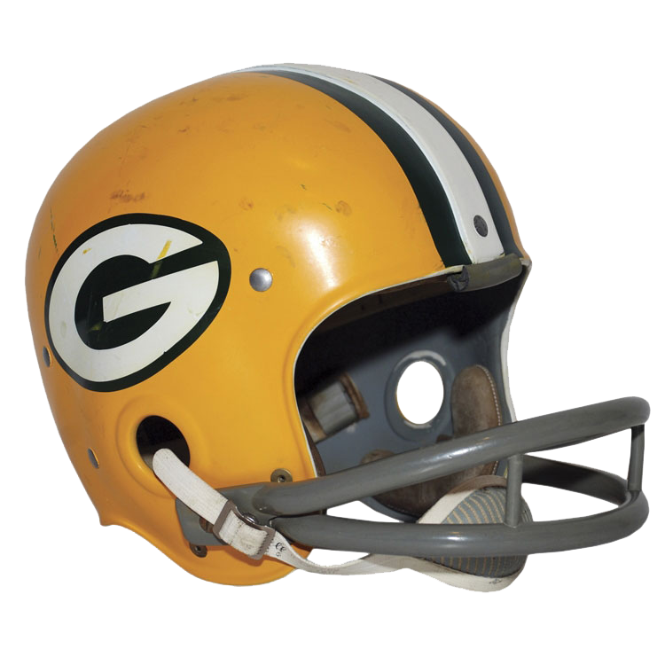
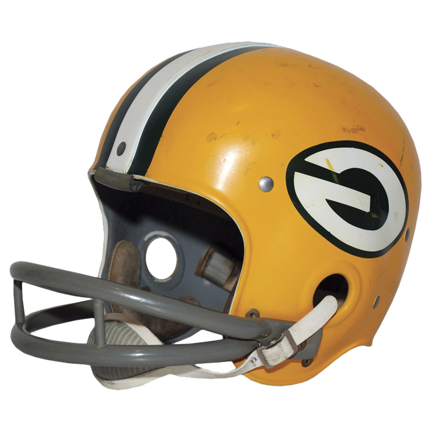
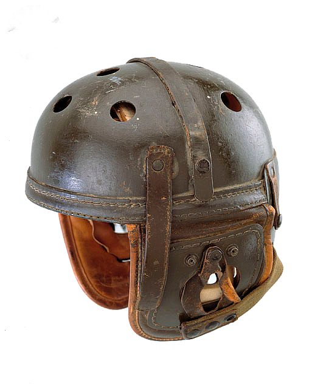
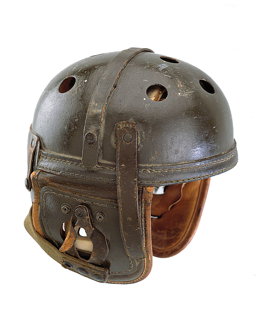

2016: Packers go on a 6 game winning streak and finish their season 10-6.
2013: Aaron Rodgers, star quarterback, suffers a broken collarbone and has to be replaced. Packers are able to finsih their season 8-7-1.
2010: Packers win against the Pittsburgh Steelers in Superbowl XLV.
2008: Brett Farve, star quarterback, announces his retirement. Aaron Rodgers is promoted to replace him, but Farve decides against retirement. He’s ultimately traded to the New York Jets.
2005: During a game in Cincinnati, a fan runs out onto the field and grabs the ball from Brett Farve.
1998: Packers lose to the denver broncos in Superbowl XXXII
1997: Packers win over New England Patriots in Superbowl XXXI, their first championship since 1967.
1989: Packers acquire Brett Farve as quarterback from the Atlanta Falcons.
1987: NFL player strike reduces amount of games and available players, who have to be quickly replaced.
1982: NFL player strike severly reduces amount of games played.
1975: Under head coach Bart Starr, packers only win 4 games.
1970: Superbowl trophy is renamed after packers head coach Vince Lombardi, who passed away that year.
 1968: Packers win Superbowl II against Oakland Raiders.
1965: Founder, player, and first coach of the packers Curly Lambeau dies, hometown stadium is renamed Lambeau Field
1967: Packers win first ever Superbowl against Kansas City Chiefs.
1950: Gene Ronziani becomes the new coach, the team starts using a green and gold color scheme, which is still in use today!
1959: Vince Lombardi takes over a strugglng team and leads them to multiple championship wins.
1919: Green Bay Packers are founded by Curly Lambeau and George Whitney Calhoun.
 